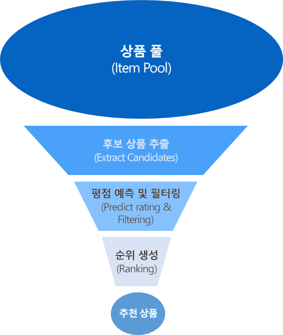
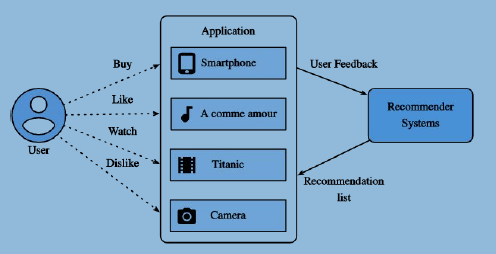

추천 알고리즘의 발전 방향-나의 생각
추천 알고리즘은 빅테이터를 기반으로 만들어진 정보기술 이므로 데이터 편향 가능성이 존재하고 개인정보를 침해할 가능성이 존재합니다. 그러나 추천 알고리즘은 사용자의 정보 접근성을 향상시키고 개인화 경험을 제공하며 새로운 기회를 창출 할 수 있도록 도와주므로 앞서 말한 윤리적 문제점에 대해서 심도있는 고찰을 통해 추천 알고리즘 기술을 발전 시키는 방향으로 연구를 진행하여야 합니다.
추천알고리즘이란 무엇일까요?
추천 알고리즘은 대상자가 좋아할 만한 무언가를 추천하는 알고리즘 입니다.
인터넷과 디지털의 기술 발전으로 정보 양이 급증하고 사용자는 방대한 정보 속에서 자신에게 필요한 정보를 찾는데에 어려움을 겪었습니다. 따라서 정보 과부하 문제 해결을 위한 효율적인 정보제공 시스템이 필요함에 따라 추천 알고리즘 기술이 개발 되었습니다.
이는 기존 검색 방식의 한계를 해결하고 사용자에게 맞춤형 정보를 제공함에 따라 사용자의 만족도를 향상시키는 목적을 갖고 있습니다. 정보 발견 기회를 확대시키고 플랫폼 성장을 촉진시키는 역할을 합니다.
영상 보기추천 알고리즘 기술은 이처럼 다양한 분야에서 활용 될 수 있으며 개인 맞춤형 서비스 제공 및 효율성을 증대시킬 수 있습니다.
| 알고리즘 원리 | |
|---|---|
|  | 추천 시스템 추천 시스템은 대상 상품들에서 후보 상품을 추출 한 뒤 그 후 추출된 상품에 대해 예측이나 필터링을 수행하고 그 결과에 기초해 상품 순위를 매깁니다. |
| 기본 추천 과정 사용자가 좋아함을 표시하거나, 사거나, 찾아보거나, 싫어함을 표시하는 행위에서 알고리즘은 정보를 얻어 사용자에게 다양한 매체를 통하여 정보를 전달 합니다. |
 |
추천 알고리즘은 빅테이터를 기반으로 만들어진 정보기술 이므로 데이터 편향 가능성이 존재하고 개인정보를 침해할 가능성이 존재합니다. 그러나 추천 알고리즘은 사용자의 정보 접근성을 향상시키고 개인화 경험을 제공하며 새로운 기회를 창출 할 수 있도록 도와주므로 앞서 말한 윤리적 문제점에 대해서 심도있는 고찰을 통해 추천 알고리즘 기술을 발전 시키는 방향으로 연구를 진행하여야 합니다.